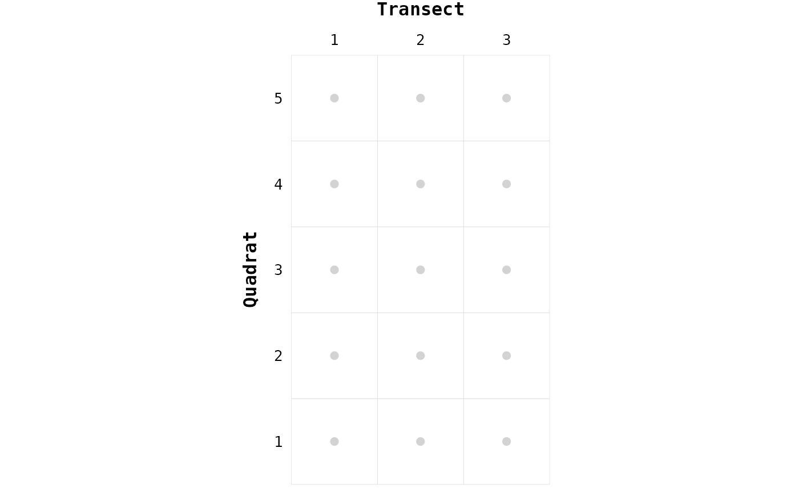
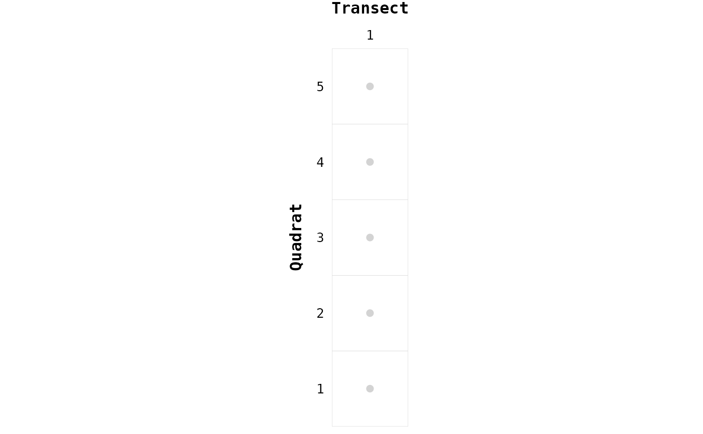

Creates unique nodes (sampling units) labels in directed (or undirected) spatial (or not) networks.
It's important to note that, even the package chessboard is designed to
deal with spatial networks, it does not explicitly use spatial coordinates.
Every functions of the package will use the nodes labels.
To work, the package chessboard requires that the sampling has two
dimensions:
one from bottom to top (called quadrats), and one from left to right
(called transects). If the sampling has been conducted along one single
dimension (transects or quadrats), this function will create a
fictitious label for the missing dimension.
In other words, the package chessboard can work with sampling designs such
as regular grids (two dimensions), transects (one dimension), and quadrats
(one dimension).
In addition, the package can also deal with multiple locations. In that
case, users will need to use the argument location.
The nodes labels will be of the form: 1-2, where 1 is the identifier of
the transect (created by the function if missing), and 2, the identifier
of the quadrat (created by the function if missing).
create_nodes_labels(data, location, transect, quadrat)a data.frame with at least one column, 'transect' or
'quadrat'. If only one column is provided and transect or quadrat
is NULL, the network will be considered as one-dimensional. If data
contains both 'transect' and 'quadrat' columns, the network will be
considered as two-dimensional. The data.frame can contain additional
columns.
a character of length 1. The name of the column that
contains location identifiers. If missing (or NULL), a unique location
identifier will be created and named 1 (for the purpose of the package
only). This argument is optional if the sampling ha been conducted at one
location, but required if the survey is structured in multiple locations.
a character of length 1. The name of the column that
contains transect identifiers. If missing (or NULL), a unique transect
identifier will be created and named 1 (for the purpose of the package
only). If missing, the network will be considered as one-dimensional.
a character of length 1. The name of the column that
contains quadrat identifiers. If missing (or NULL), a unique quadrat
identifier will be created and named 1 (for the purpose of the package
only). If missing, the network will be considered as one-dimensional.
A data.frame with at least the four following columns:
node, the nodes label
location, the identifier of the location
transect, the identifier of the transect
quadrat, the identifier of the quadrat
Other columns present in the original dataset will also be added.
library("chessboard")
# Two-dimensional sampling ----
sites_infos <- expand.grid("transect" = 1:3, "quadrat" = 1:5)
sites_infos
#> transect quadrat
#> 1 1 1
#> 2 2 1
#> 3 3 1
#> 4 1 2
#> 5 2 2
#> 6 3 2
#> 7 1 3
#> 8 2 3
#> 9 3 3
#> 10 1 4
#> 11 2 4
#> 12 3 4
#> 13 1 5
#> 14 2 5
#> 15 3 5
nodes <- create_nodes_labels(data = sites_infos,
transect = "transect",
quadrat = "quadrat")
nodes
#> node location transect quadrat
#> 1 1-1 1 1 1
#> 2 1-2 1 1 2
#> 3 1-3 1 1 3
#> 4 1-4 1 1 4
#> 5 1-5 1 1 5
#> 6 2-1 1 2 1
#> 7 2-2 1 2 2
#> 8 2-3 1 2 3
#> 9 2-4 1 2 4
#> 10 2-5 1 2 5
#> 11 3-1 1 3 1
#> 12 3-2 1 3 2
#> 13 3-3 1 3 3
#> 14 3-4 1 3 4
#> 15 3-5 1 3 5
gg_chessboard(nodes)

# One-dimensional sampling (only transects) ----
transects_only <- data.frame("transect" = 1:5)
nodes <- create_nodes_labels(transects_only,
transect = "transect")
nodes
#> node location transect quadrat
#> 1 1-1 1 1 1
#> 2 2-1 1 2 1
#> 3 3-1 1 3 1
#> 4 4-1 1 4 1
#> 5 5-1 1 5 1
gg_chessboard(nodes)

# One-dimensional sampling (only quadrats) ----
quadrats_only <- data.frame("quadrat" = 1:5)
nodes <- create_nodes_labels(quadrats_only,
quadrat = "quadrat")
nodes
#> node location transect quadrat
#> 1 1-1 1 1 1
#> 2 1-2 1 1 2
#> 3 1-3 1 1 3
#> 4 1-4 1 1 4
#> 5 1-5 1 1 5
gg_chessboard(nodes)
